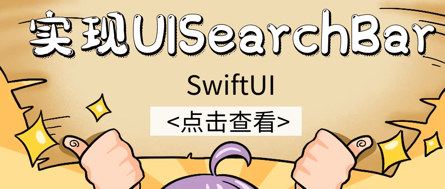

SwiftUI没有提供UISearchBar，虽然我们可以通过使用TextField来自己实现SeachBar的效果，不过要想实现一个和UISearchBar同样的控件并不容易，尤其是清除按钮和搜索图标。
这里推荐直接使用UISearchBar和UIViewRepresentable协议来一个SearchBar。
到公众号【iOS开发栈】学习更多SwiftUI、iOS开发相关内容。

1
2
3
4
5
6
7
8
9
10
11
12
13
14
15
16
17
18
19
20
21
22
23
24
25
26
27
28
29
30
31
32
33
34
35
36
37
38
39
40
41
42
43
44
45
46
| struct SearchBar: UIViewRepresentable {
@Binding var text: String
var placeholder: String
var onCommit: ((_ text: String) -> Void)?
func makeUIView(context: UIViewRepresentableContext<SearchBar>) -> UISearchBar {
let searchBar = UISearchBar(frame: .zero)
searchBar.delegate = context.coordinator
searchBar.placeholder = placeholder
searchBar.autocapitalizationType = .none
searchBar.searchBarStyle = .minimal
return searchBar
}
func updateUIView(_ uiView: UISearchBar, context: UIViewRepresentableContext<SearchBar>) {
uiView.text = text
}
func makeCoordinator() -> SearchBar.Coordinator {
return Coordinator(text: $text, onCommit: self.onCommit)
}
class Coordinator: NSObject, UISearchBarDelegate {
@Binding var text: String
var onCommit: ((_ text: String) -> Void)?
init(text: Binding<String>, onCommit: ((_ text: String) -> Void)?) {
_text = text
self.onCommit = onCommit
}
func searchBar(_ searchBar: UISearchBar, textDidChange searchText: String) {
text = searchText
}
func searchBarSearchButtonClicked(_ searchBar: UISearchBar) {
if let onCommit = self.onCommit {
onCommit(searchBar.text ?? "")
}
}
}
}
|
UIViewRepresentable是SwiftUI框架中提供的用于将UIView转换成SwiftUI中View的协议。
func makeUIView(context: Self.Context) -> Self.UIViewType用来创建View的方法，遵守UIViewRepresentable协议的类必须要实现这个方法。它的返回值是一个UIView类的实例。这个方法只会在创建View时调用一次，当View需要更新时会调用下面的这个方法。
func updateUIView(_ uiView: Self.UIViewType, context: Self.Context)当UIView发生任何需要更新状态的事件时，这个方法就会被调用来更新View的状态。
func makeCoordinator() -> Self.Coordinator需要一个Coordinator的实例作为返回值。它通常用来处理一些事件（点击、时间、delegate、通知）引起了UIView的状态变化后，能够将新的状态反映到View上。
到公众号【iOS开发栈】学习更多SwiftUI、iOS开发相关内容。